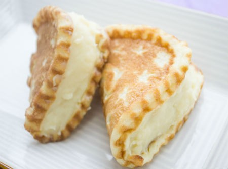

|  |
- Dorayaki é um tipo de doce japonês, uma panqueca de feijão vermelho que consiste de duas pequenas panquecas feitas de castela enroladas com um recheio de pasta de feijão azuki. O dorayaki é semelhante ao imagawayaki, mas este é preparado com a massa cobrindo completamente o recheio e muitas vezes é servido quente.
|